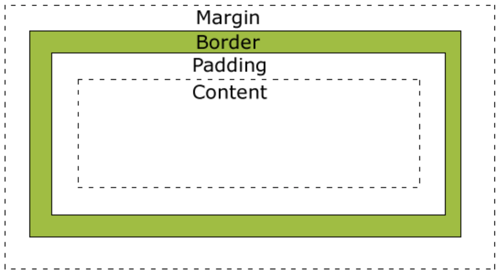
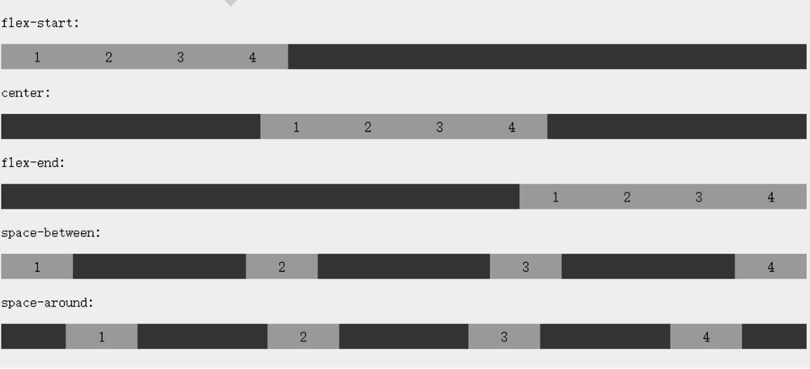

CSS3
盒子模型 box-modal

标准盒模型和IE盒模型
标准盒模型（content）
width = content.width
height = content.height
IE盒模型（content + padding + border）
width = content.width + padding-left + padding-right + border-left + border-right
height = content.height + padding-top + padding-bottom + border-top + border-bottom
box-sizing
CSS3中可以通过box-sizing 来指定盒模型，即可指定为content-box、border-box，这样我们计算盒子大小的方式就发生了改变。
content-box: 盒子大小 = width + padding + border（默认）
border-box: 盒子大小 = width
inherit: 继承父元素的盒子模型
1 | <style type="text/css"> |
1
2
3
4
弹性盒子 flex box
定义弹性盒子
1 | display: -webkit-flex; |
flex-direction
指定弹性子元素在父容器中的位置
1 | flex-direction: row | row-reverse | column | column-reverse |
- row：横向从左到右排列（左对齐），默认的排列方式
- row-reverse：反转横向排列（右对齐，从后往前排，最后一项排在最前面
- column：纵向排列
- column-reverse：反转纵向排列，从后往前排，最后一项排在最上面
justify-content
内容对齐（justify-content）属性应用在弹性容器上，把弹性项沿着弹性容器的主轴线（main axis）对齐。
1 | justify-content: flex-start | flex-end | center | space-between | space-around |
- flex-start：
弹性项目向行头紧挨着填充。这个是默认值。第一个弹性项的main-start外边距边线被放置在该行的main-start边线，而后续弹性项依次平齐摆放。 - flex-end：
弹性项目向行尾紧挨着填充。第一个弹性项的main-end外边距边线被放置在该行的main-end边线，而后续弹性项依次平齐摆放。 - center：
弹性项目居中紧挨着填充。（如果剩余的自由空间是负的，则弹性项目将在两个方向上同时溢出）。 - space-between：
弹性项目平均分布在该行上。如果剩余空间为负或者只有一个弹性项，则该值等同于flex-start。否则，第1个弹性项的外边距和行的main-start边线对齐，而最后1个弹性项的外边距和行的main-end边线对齐，然后剩余的弹性项分布在该行上，相邻项目的间隔相等。 - space-around：
弹性项目平均分布在该行上，两边留有一半的间隔空间。如果剩余空间为负或者只有一个弹性项，则该值等同于center。否则，弹性项目沿该行分布，且彼此间隔相等（比如是20px），同时首尾两边和弹性容器之间留有一半的间隔（1/2*20px=10px）。

align-items
设置或检索弹性盒子元素在侧轴（纵轴）方向上的对齐方式
1 | align-items: flex-start | flex-end | center | baseline | stretch |
- flex-start：弹性盒子元素的侧轴（纵轴）起始位置的边界紧靠住该行的侧轴起始边界
- flex-end：弹性盒子元素的侧轴（纵轴）起始位置的边界紧靠住该行的侧轴结束边界
- center：弹性盒子元素在该行的侧轴（纵轴）上居中放置。（如果该行的尺寸小于弹性盒子元素的尺寸，则会向两个方向溢出相同的长度）
- baseline：如弹性盒子元素的行内轴与侧轴为同一条，则该值与’flex-start’等效。其它情况下，该值将参与基线对齐
- stretch：如果指定侧轴大小的属性值为’auto’，则其值会使项目的边距盒的尺寸尽可能接近所在行的尺寸，但同时会遵照’min/max-width/height’属性的限制
flex-wrap
指定弹性盒子的子元素换行方式
1 | flex-wrap: nowrap|wrap|wrap-reverse|initial|inherit; |
- nowrap：弹性容器为单行。该情况下弹性子项可能会溢出容器（默认）
- wrap：弹性容器为多行。该情况下弹性子项溢出的部分会被放置到新行，子项内部会发生断行
- wrap-reverse：反转 wrap 排列
align-content
用于修改 flex-wrap 属性的行为。类似于 align-items, 但它不是设置弹性子元素的对齐，而是设置各个行的对齐
1 | align-content: flex-start | flex-end | center | space-between | space-around | stretch |
- stretch：各行将会伸展以占用剩余的空间（默认）
- flex-start：各行向弹性盒容器的起始位置堆叠
- flex-end：各行向弹性盒容器的结束位置堆叠
- center：各行向弹性盒容器的中间位置堆叠
- space-between：各行在弹性盒容器中平均分布
- space-around：各行在弹性盒容器中平均分布，两端保留子元素与子元素之间间距大小的一半
align-self
设置弹性元素自身在侧轴（纵轴）方向上的对齐方式
1 | align-self: auto | flex-start | flex-end | center | baseline | stretch |
- auto：如果’align-self’的值为’auto’，则其计算值为元素的父元素的’align-items’值，如果其没有父元素，则计算值为’stretch’
- flex-start：弹性盒子元素的侧轴（纵轴）起始位置的边界紧靠住该行的侧轴起始边界
- flex-end：弹性盒子元素的侧轴（纵轴）起始位置的边界紧靠住该行的侧轴结束边界
- center：弹性盒子元素在该行的侧轴（纵轴）上居中放置。（如果该行的尺寸小于弹性盒子元素的尺寸，则会向两个方向溢出相同的长度）
- baseline：如弹性盒子元素的行内轴与侧轴为同一条，则该值与’flex-start’等效。其它情况下，该值将参与基线对齐
- stretch：如果指定侧轴大小的属性值为’auto’，则其值会使项目的边距盒的尺寸尽可能接近所在行的尺寸，但同时会遵照’min/max-width/height’属性的限制
flex
指定弹性子元素如何分配空间
1 | flex: auto | initial | none | inherit | [ flex-grow ] || [ flex-shrink ] || [ flex-basis ] |
- auto: 计算值为 1 1 auto
- initial: 计算值为 0 1 auto
- none：计算值为 0 0 auto
- inherit：从父元素继承
- [ flex-grow ]：定义弹性盒子元素的扩展比率
- [ flex-shrink ]：定义弹性盒子元素的收缩比率
- [ flex-basis ]：定义弹性盒子元素的默认基准值